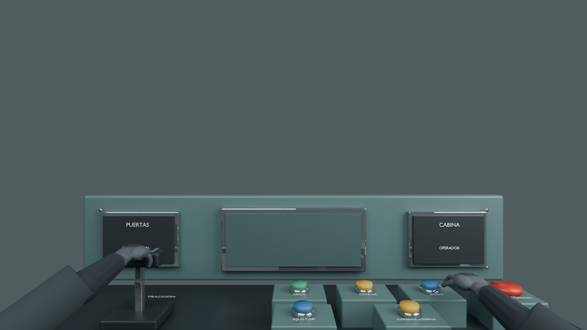
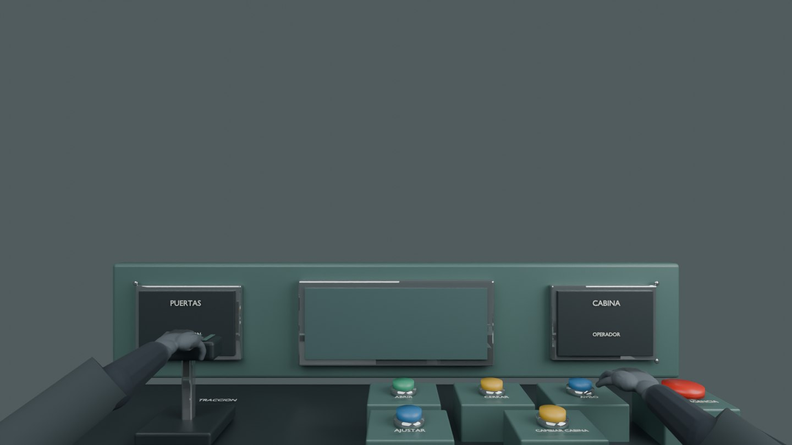

Arrastra la palanca: arriba tracción, centro inercia y abajo freno. Pulsa los botones para accionar puertas, aviso y emergencia con una mano animada.
Disponible para NM-22, NM-79 y MP-82. Las vistas al andén e interior permanecen accesibles. El botón Mandos clásicos recupera el panel anterior.
Alcance, controles y verificaciones


Verificación funcional con modelos reales en DOM/CPU; revisión de encuadre mediante Blender. Pendiente revisión visual interactiva en navegador.